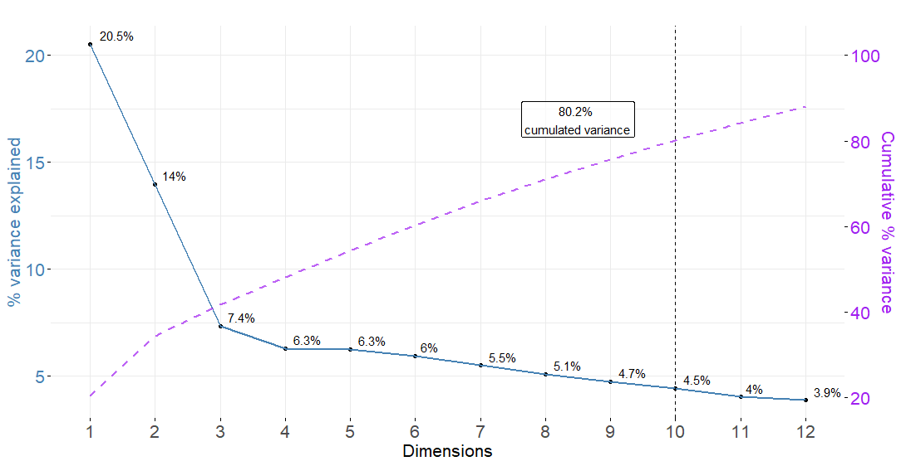
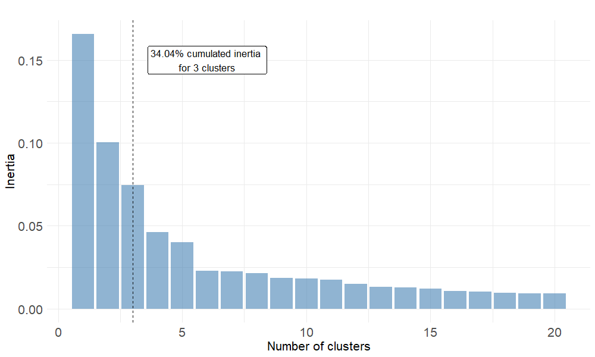
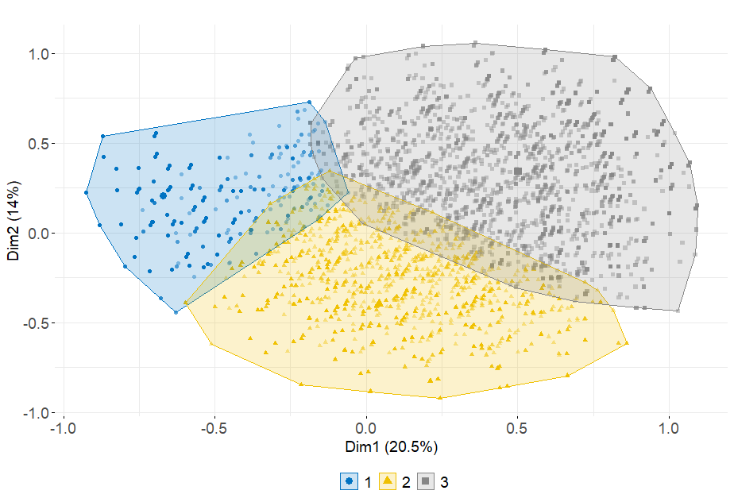
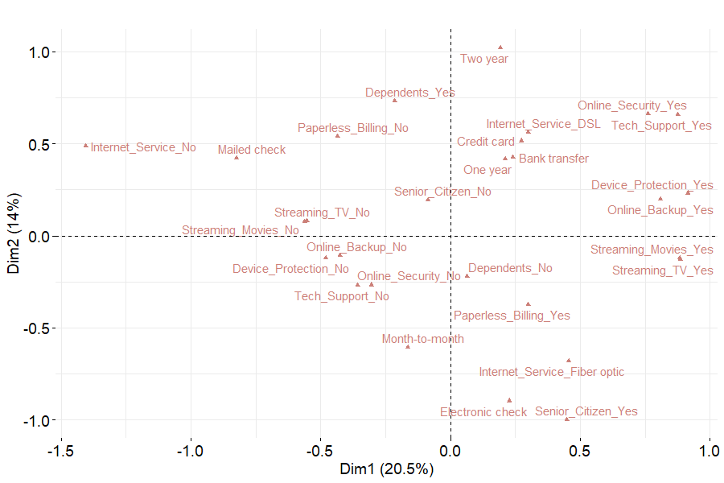
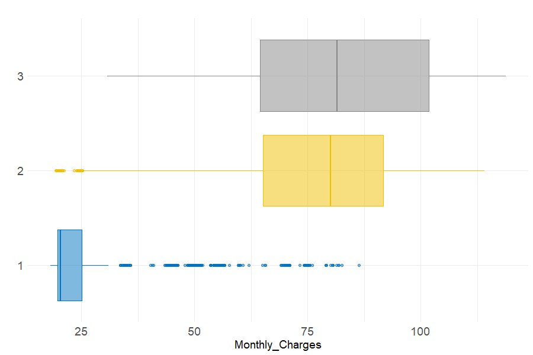
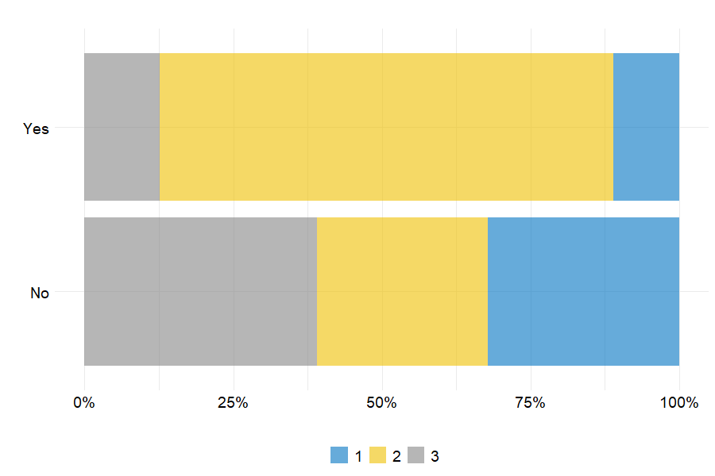

5.2 Portfolio segmentation
Customer segmentation helps decision makers having a better understanding of their clients. It can then be used to enhance marketing strategies via personalization. In other words, segmentation can lead to target customers with offers and incentives personalized to their wants, needs and preferences. In order to make segmentation more accurate, it is more appropriate to use cluster analysis than predetermined thresholds or rules, even more when we have several variables at our disposal. In this context, this section focuses on applying clustering methods on features displayed in table 5.1, apart from Monthly_Charges.
5.2.1 Transforming qualitative variables into principal axes
The variables selected to perform cluster analysis being categorical, it is needed to transform them into continuous features. To that end, multiple correspondence analysis (MCA) is performed. MCA is a dimension reducing method which takes multiple categorical variables and seeks to identify associations between levels of those variables. MCA aims at highlighting features that separate classes of individuals, while determining links between variables and categories. To that end, MCA keeps the core information by the means of principal components which are projected axes (Scholler 2021a).
Here, the main objective of applying MCA being to obtain continuous features, it is decided to keep as many axes as it takes to have at least 80% cumulated variance. In other words, we want the principal components to gather enough customer-related information. After having processed the MCA function from the R package FactoMineR (Lê, Josse, and Husson 2008), 10 principal components are required to keep more than 80% cumulated variance as depicted by figure 5.1.
Figure 5.1: Variance explained and cumulated variance after MCA
Now the 10 continuous axes are identified, the next step consists in retrieving the customers’ coordinates onto those axes to then perform cluster analysis.
| CustomerID | Dim 1 | Dim 2 | Dim 3 | Dim 4 | Dim 5 | Dim 6 | Dim 7 | Dim 8 | Dim 9 | Dim 10 |
|---|---|---|---|---|---|---|---|---|---|---|
| 4197 | -0.15 | -0.02 | -0.30 | -0.03 | 0.03 | -0.29 | -0.61 | 0.01 | -0.04 | 0.10 |
| 3025 | 0.53 | 0.04 | 0.08 | 0.26 | 0.09 | -0.54 | 0.55 | 0.40 | -0.02 | -0.19 |
| 6585 | -0.04 | -0.24 | -0.15 | 0.40 | 0.07 | -0.20 | 0.18 | -0.25 | 0.02 | 0.07 |
| 3862 | -0.44 | -0.20 | -0.46 | -0.14 | -0.01 | 0.01 | -0.05 | -0.04 | -0.52 | 0.01 |
| 300 | 0.21 | -0.37 | 0.11 | 0.00 | 0.00 | -0.41 | -0.54 | -0.13 | 0.36 | 0.06 |
Note that a more in-depth visualisation of those 10 principal components can be found in figures 5.19 to 5.23 in the appendix. This charts depict the percent contribution of each variable’s categories to the principal axes, which is helpful to have a better understanding of MCA results.
5.2.2 Hierarchical clustering on principal components
Multiple correspondence analysis has led us to convert the categorical variables related to account and services information into 10 numerical projected axes. The stake here is to use the customers’ projections onto the MCA components in order to identify groups of individuals through clustering techniques. As a reminder, clusters are expected to discriminate between customers based on the services they use and the type of plan they are enrolled into. The method implemented in this part relies on hierarchical clustering on principal components (HCPC).
Optimal number of clusters
The key parameter to optimize when applying clustering methods is the number of clusters \(k\). When using the HCPC function from FactorMineR, the nb.clust parameter is set to -1 so that the tree is automatically cut at the suggested level. More precisely, the function first builds a hierarchical tree. Then the sum of the between-cluster inertia is calculated for each partition. The suggested partition is the one with the higher relative gain in inertia. Intuitively, the underlying objective is to choose a number of clusters leading to \(k\) well distinguished groups. Here, the between-cluster inertia is the metric measuring the amount of variability between clusters.
Figure 5.2: Relative gains in between-cluster inertia given the partition
Once the 3 groups identified by the clustering algorithm, one can determine customer repartition within those groups. Looking at table 5.3, cluster 2 represents the largest share of clients. This result is illustrated on figure 5.3.
| Cluster 1 | Cluster 2 | Cluster 3 | |
|---|---|---|---|
| % | 26.55 | 41.38 | 32.07 |
Cluster visualisation
When performing hierarchical clustering on principal components, visualizing cluster repartition onto MCA axes is relevant to have a first idea on how each cluster if different from the others. Figure 5.3 indicates that the three clusters are well separated in the \((F_1 ; F_2)\) plan. Cluster 1 is more concentrated than the others and take lower values onto dimension 1. The second group spreads over axis 1 and takes lower values on axis 2. Finally, cluster 3’s position shows that its customers are characterized by categories which take positive values on both dimensions 1 and 2.
Figure 5.3: Cluster visualisation onto the 2 first MCA axes
In the appendix, figure 5.24 aims at visualizing clusters onto the other MCA principal components. Note that none of theses axes manages to separate the three clusters. This may be due to the low amount of variance each of these axes carries.
Cluster description
Once the 3 customer segments are identified on the MCA dimensions, it seems to be interesting to describe them according to the original features. To that end, the repartition of qualitative variables’ categories is depicted on the following figure. Comparing figures 5.3 and 5.4, one can derive the following table in order to have a more precise idea on each segment.
| Cluster | Representative Categories |
|---|---|
| 1 | Mailed_check, Internet_Service_No |
| 2 | Month-to-month, Electronic check, Tech_Support_No |
| 3 | Two year, Credit card, Tech_Support_Yes |
The first segment may be made up of customers having subscribed to minimum plans whith no internet service whereas segment 3 tends to represent clients with a large variety of services and long-term contracts. On the opposite, cluster 2 clients are enrolled in short-term plans with internet service but not technical options.
Figure 5.4: MCA - Categories plot onto the two first axes
Figure 5.5 depicts the differences in monthly charges paid by each customer segment. It can be observed that most of cluster 1 clients are enrolled in cheap subscriptions. On the contrary, the charges paid by the second and third clusters are higher and less homogeneous. Note that the median price is the same among these two groups.
Figure 5.5: Monthly charges repartition across clusters
Since one of the study’s purpose is to model customer churn, it is important to compare the churn rate across the 3 groups. Here, the striking point is that cluster 2 clients account for a large proportion of churners. Indeed, more than 75% of the clients having left the portfolio come from the second group. It can also be noted that cluster 1 and 3 are composed of more loyal customers as more than 70% of clients who did not churn are from those 2 groups.
Figure 5.6: Churn repartition per cluster
Concluding remarks on portfolio segmentation
With the aim of divide the portfolio into multiple groups based on categorical features, hierarchical clustering on principal components has led to identify three customer segments which can be broadly described as shown in the following table.
| Cluster | Loyalty | Value | Segment name |
|---|---|---|---|
| 1 | High | Low | Silver |
| 2 | Low | High | Gold |
| 3 | High | High | Platinum |
Gold customers are valuable to the firm but are not loyal, making them the target segment. The objective would be to encourage them to stay in the portfolio longer.